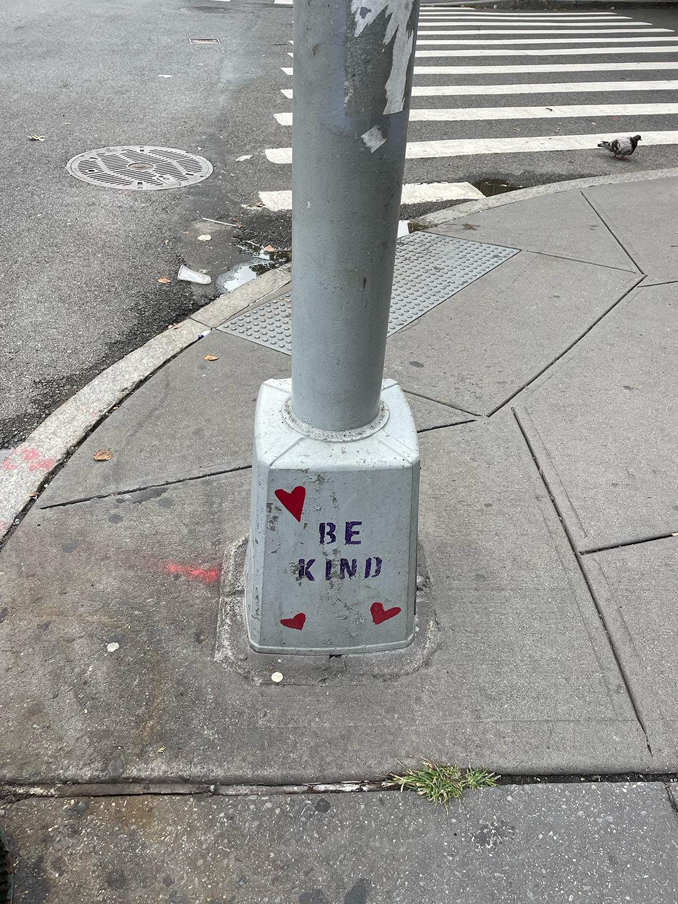

In a world bustling with noise and haste, “Be kind” stands as a gentle beacon of hope.
It invites us to pause, reflect, and consider the impact our actions have on others. Kindness is a thread that weaves us together, transforming fleeting moments into lasting connections.
Whether it’s a warm smile to a stranger, a helping hand to someone in need, or a few words of encouragement, each act of kindness has the power to ripple through our communities.
So, let’s embrace this simple yet profound reminder found on that electric pillar and choose kindness daily. You never know how your small gesture might brighten someone’s world.